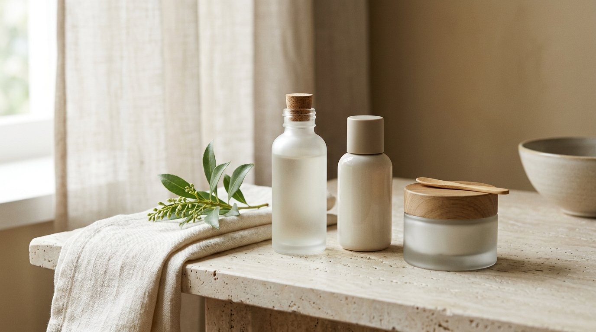
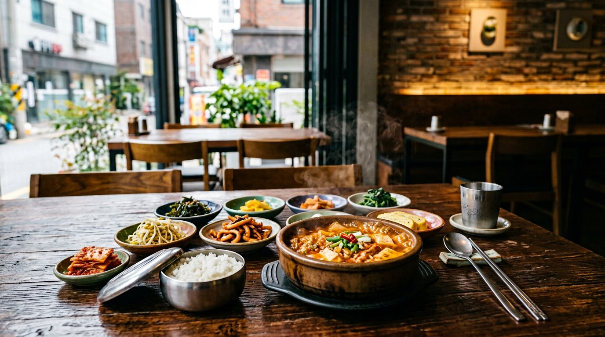

01
01
MEDICAL BEAUTY · 基礎
美容整形の相談前に。確認したい7つの質問。
担当医から費用、帰国後の連絡先まで。相談前に確認したい視点をまとめました。
記事を読む
「好き」を、知ることから自分のペースで楽しむために。
美容医療の基礎ガイドへ担当医・リスク・費用・帰国後の相談先。納得できるまで情報を確かめるためのガイドを用意しました。
FEATURE / MEDICAL BEAUTY
憧れや口コミだけで決めず、自分の希望と不安を整理するために。相談前に確認したい視点を、ひとつずつまとめました。

BEAUTY, WITH CAREBEFORE YOU DECIDE · 基礎ガイド
誰が診察・施術を担当するのか。期待できることとリスク、費用の内訳、帰国後に困ったときの連絡先。相談の場で確かめたい7つの質問を紹介します。
気になるテーマを選ぶと、関連記事を絞り込めます。
2026 SOURCE RANKING / BEAUTY
韓国の化粧品レビュー・ショッピングプラットフォーム「Hwahae」のスキンケアランキングを、確認できた掲載順で紹介します。評価点とレビュー件数も、同じページの表示値を記録しました。
データの読み方
順位はHwahae公式ページの掲載順（ページ内の構造化リスト順）。レビュー件数・評価点は同ページに表示された商品別の値です。販売数や購入人数を示す数字ではありません。
同ページの説明は「1,000万利用者・103万レビュー基盤」としていますが、確認した範囲では順位の詳細な算出式・重み付けは明示されていません。販売ランキングや韓国市場全体の「ベスト」とは言い換えず、当サイト独自の順位付け・効能評価も加えていません。
掲載商品には企画セットが含まれる場合があります。ページの更新・在庫・掲載内容は変わるため、購入前に公式ページでご確認ください。
Hwahae公式ランキングを確認する2026 SOURCE DATA / TRAVEL
2026年第1四半期の地域観光データと、2025年のソウル主要16エリアの外国人推定日平均人流を掲載。測定期間・指標を分け、「訪問者数」と「人気」を一つの順位に混ぜません。
2026年1〜3月と2025年1〜3月の比較。文化体育観光部の2026-04-14発表値（暫定値を含む）を掲載。
※空港・鉄道・港の利用者数、地域訪問率、滞在日数、支出額は異なる指標です。同一人物の重複を除いた「旅行者の実人数」とは限らず、合算していません。
ソウルAI財団がSK Telecomの外国人フットトラフィック推計を用いて分析。2025年の数値で、2026年のリアルタイム人数ではありません。
日本からの旅行者に関する分析：明洞・南大門市場・広蔵市場では、日本・中国からの訪問者の割合が高い傾向が報告されています。訪問数の順位とは別の、出身市場の構成に関する分析です。
※人流は短期滞在の外国人について、ローミングデータと出入国記録を基に特定エリアに一定時間滞在した人数を推計したものです。年間のユニーク訪問者数・観光地の質・満足度順位ではありません。Google Mapsレビュー指標は対象期間も単位も異なるため、人流順位とは比較していません。
2026 SOURCE DATA / FOOD
韓国観光公社のTMAPナビゲーション検索ランキングを、地域内・地域外利用者の区分ごとに掲載。MICHELIN Guide 2026は別枠のインスペクター選定として紹介します。
確認日：2026.10.10｜公式チャートの「맛집랭킹10」掲載順
確認日：2026.10.10｜公式チャートの「맛집랭킹10」掲載順
2026年3月5日発表のガイド選定。消費者の訪問数・ナビ検索数による人気ランキングとは異なる、インスペクターによる選定です。
※MICHELIN Guideの選定は専門ガイドの評価カテゴリーです。TMAP検索順位や一般利用者全体の人気・来店数と同じ意味ではありません。
MICHELIN Guide公式発表を確認するTHE JOURNAL / 読みもの
流行だけではなく、選ぶときに役立つ視点も。気になるテーマや言葉で記事を探せます。
4件の記事を表示中
01
担当医から費用、帰国後の連絡先まで。相談前に確認したい視点をまとめました。
記事を読む話題の商品を買う前に、自分の肌や使い方に合うかを確認するヒント。
記事を読む
03料理の名前や味のイメージを知って、食事の時間を楽しむための入門編。
記事を読むエリア、移動、休憩のバランスを整える、無理のない旅程づくり。
記事を読むOUR EDITORIAL PROMISE
SEOUL NOTE が大切にする、情報との付き合い方。
韓国を楽しむ気持ちを大切にしながら、知っておきたいこともきちんと伝える。SEOUL NOTE は、流行を追うだけでなく、読者が自分に合う選択を考えるための編集ガイドを目指します。
CHECK THE ORIGINAL SOURCE
制度、渡航情報、施設案内は更新されます。読みものだけで判断せず、必要なときは公的機関や各施設の最新情報も確認してください。
韓国保健産業振興院の日本語ポータルで、医療関連の公式案内を確認できます。
公式ポータルを見る VISITKOREA · KTO韓国の観光、食、旅行基本情報などを公式サイトで確認できます。
公式サイトを見る JAPAN MOFA · SAFETY渡航前に、危険情報や安全対策の最新案内を確認するための窓口です。
安全情報を見る※公式サイトへのリンクは情報確認のためのものです。掲載機関・医療提供者への推薦、保証、治療結果の評価を意味するものではありません。
BEFORE YOU GO · TRAVEL NOTE
渡航条件や予約先の公式案内、通信、保険、食事の希望。出発前に見返せるチェックリストを用意しました。チェック内容はこのブラウザーに保存できます。